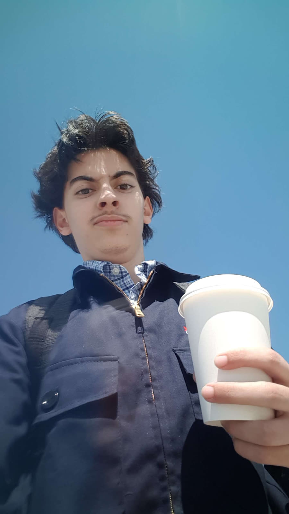

Controls Engineering Co-op
Ford Motor Company, Windsor
May – Aug 2026

- Troubleshot PLC, HMI, robot, RFID and machine-vision faults on a live engine line with Siemens STEP 7, TIA Portal and Octoplant.
- 30+ hours of machine-vision analysis to separate true rejects, false rejects and false accepts, and tune inspection limits with rollback notes.
- Built Python, Excel/VBA and Power BI tools for production-mix forecasting and scrap tracking.